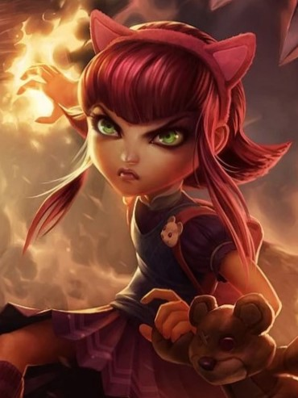
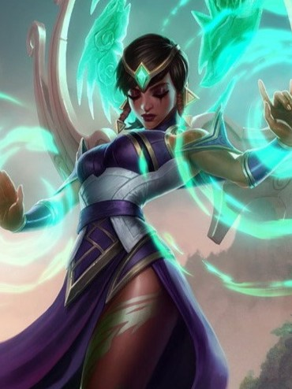
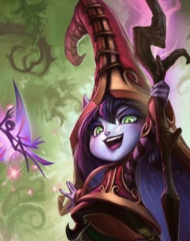
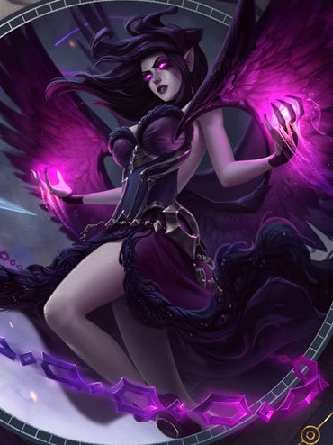
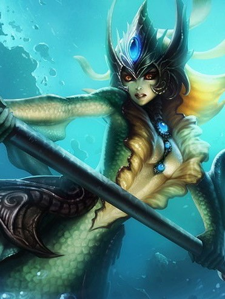
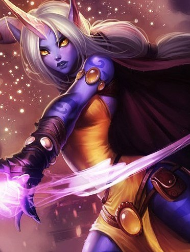
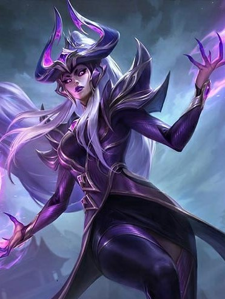

-
Annie, A criança Sombria
Perigosa, mas adoravelmente precoce, Annie é uma pequena maga com imenso poder piromaníaco. Mesmo isolada nas sombras das montanhas ao norte de Noxus, ela causa estranhamento com sua magia. Sua afinidade natural com o fogo já era evidente desde a primeira infância, quando ela tinha explosões emocionais imprevisíveis. Apesar disso, ela aprendeu a controlar esses “truques divertidos”. Seu truque favorito inclui invocar seu amado ursinho de pelúcia, Tibbers, como protetor incendiário. Perdida na eterna inocência da infância, Annie vaga pelas florestas sombrias em busca de alguém para brincar.
Mago/Suporte -
Karma, A Iluminada
Nenhum mortal representa melhor as tradições espirituais de Ionia do que Karma. Ela é a incorporação de uma alma reencarnada inúmeras vezes, que leva todas as memórias acumuladas para cada nova vida e que foi agraciada com um poder que poucos compreendem. Nos períodos recentes de crise, ela fez tudo o que estava ao seu alcance pelo seu povo, mas sabe que a paz e a harmonia talvez só sejam possíveis a um custo considerável — tanto para ela quanto para sua amada terra.
Mago/Suporte -
Lulu, A fada Feiticeira
A maga yordle Lulu é conhecida por conjurar ilusões de sonhos e criaturas fantasiosas enquanto vaga por Runeterra com seu silfo companheiro, Pix. Lulu transforma a realidade por capricho, distorcendo o que ela vê como restrições desse banal reino físico. Apesar de alguns considerarem sua magia no mínimo anormal, e no máximo perigosa, ela acredita que todos merecem um toque de encanto.
Mago/Suporte -
Morgana, A Caída
Dividida entre sua natureza mortal e celestial, Morgana prendeu as asas para preservar sua humanidade e inflige sua dor e amargura nos desonestos e corruptos. Ela rejeita as leis e tradições que considera injustas e luta pela verdade nas sombras de Demacia com escudos e correntes de fogo sombrio, ainda que alguns tentem reprimi-la. Acima de tudo, Morgana acredita que até os banidos e exilados podem, um dia, se erguer.
Mago/Suporte -
Nami, A Conjuradora das Marés
Uma jovem e obstinada vastaya dos mares, Nami é uma das primeiras integrantes da tribo Marai a sair das ondas e se aventurar na terra seca, onde seus antigos acordos com os targonianos foram quebrados. Com nenhuma outra opção, ela decidiu que seria ela mesma quem completaria o ritual sagrado que garantiria a segurança de seu povo. Dentro do caos dessa nova era, Nami enfrenta um futuro incerto com coragem e determinação, usando seu Conjurador das Marés para invocar a própria força dos oceanos.
Mago/Suporte -
Soraka, A filha das Estrelas
Uma andarilha vinda de dimensões celestiais além do Monte Targon, Soraka desistiu de sua imortalidade para proteger as raças mortais de seus instintos mais violentos. Ela pretende espalhar as virtudes da compaixão e da misericórdia a todos que encontra, curando até mesmo aqueles que desejam seu mal. E apesar de ter visto todas as dificuldades deste mundo, Soraka ainda acredita que o povo de Runeterra não alcançou todo seu potencial.
Mago/Suporte -
Syndra, A Soberana Sombria
Syndra é uma temida maga ioniana com um poder incrível ao seu dispor. Quando criança, ela causava pavor nos anciões da aldeia com sua magia imprudente e indomada. Mandada embora para aprender a controlar seus poderes, ela terminou descobrindo que seu suposto mentor estava reprimindo suas habilidades. Transformando seus sentimentos de traição e mágoa em obscuras esferas de energia, Syndra jurou destruir todos que tentarem controlá-la.
Mago